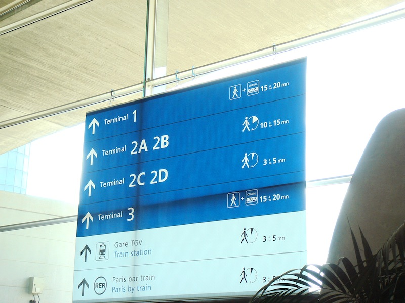

Back

Flight transfer
Terminal A to Terminal B
Changing flights can be stressful at an unknown airport, so visually follow the route you need to take, and enjoy the rest of your flight.
Local transport
Bus
Catching the bus? Visually follow the route that you need to take after leaving customs.
Local transport
Train
Catching the train? Visually follow the route that you need to take after leaving customs.